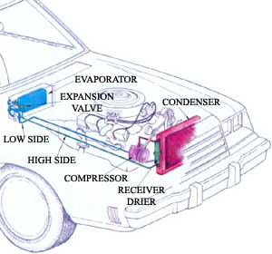
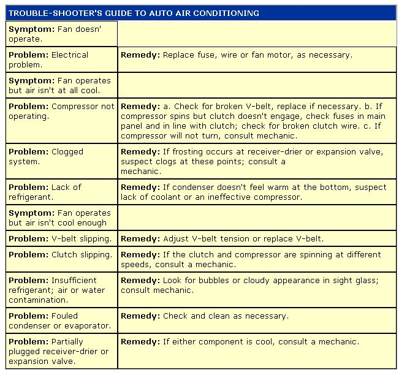

Other than a radio, air conditioning is the most popular new-car accessory today. Over 75% of all pride and joys roll out of the showroom with "factory air." What's more, each year a half-million used cars have air conditioners added.
Even though air conditioners are only slightly less common than rearview mirrors, few car owners have any clear idea just how one works or what to do if it doesn't. It's an unknown realm where the normally adventurous amateur mechanic fears to tread. There is some reason for this reluctance. Any air-conditioner problem that involves opening the pressurized system to the atmosphere should probably be left to the pros, who have the expensive tools and expertise needed. But a whole host of common problems fall short of drastic measures and are easily within reach of a shade-tree mechanic. And even if you don't qualify for that title, and decide to leave the work to others, you'll be better off if you understand the trouble.
It’s very simple: An auto air conditioner - as well as its close kin, the home air conditioner and the refrigerator - moves heat. Refrigerant picks heat up inside the car and carries it outside. Technically termed a vapor-compression cooler, an air conditioner relies on two basic physical principles to capture and release heat:
1. When a liquid changes to a gas (boils), heat is absorbed; when the gas condenses, the same amount of heat is released. The amount of heat needed to vaporize a pound of water, to make the leap from 211°F to 212°F, is 970 Btu (British thermal units). By contrast, it takes only 1 Btu to get from 210°F to 211°F. It's this change of phase that allows an air conditioner to get so much work out of a small amount of refrigerant.
2. The amount of pressure on a liquid or gas affects both its temperature and also the temperature at which it boils or condenses. For instance, if you apply 20 pounds per square inch (psi) of pressure to 211°F water, it will warm to 257°F and will still be on the verge of boiling. Because temperature and pressure are directly related, jimmying with one or the other as appropriate will allow gases to be changed to liquids (and vice versa) with comparative ease.
An auto air conditioner moves heat by allowing a liquid to become a gas inside the passenger compartment (thus absorbing heat) and then returning the gas to liquid form outside the passenger compartment (where it gives up heat). The liquid happens to be refrigerant-12 (often called R-12 or Freon, the DuPont trademark). R-12 is used because it happens to have a stable and convenient boiling point (19°F at 20 psi). Otherwise, it really doesn't have magical properties. In fact, R-12 has a couple of disadvantages compared to its mundane relative, water: When exposed to flame or hot metal, it forms poisonous phosgene gas. Also, the family of chlorofluorohydrocarbons is implicated in the destruction of the earth's protective layer of stratospheric ozone.
Though there are several ways to lay out the components of an auto air conditioner, you'll always find five essential parts. A typical layout is shown in Fig. 1. In order to troubleshoot your system, you'll have to be able to identify the components and have some idea what they do:
1. Compressor. The compressor takes low-pressure, cool refrigerant and makes it hot by compressing it. Two to six pistons that resemble the ones in your engine do the actual compressing. A V-belt from the engine drives the unit, and a clutch on its front disconnects it when the air conditioner is switched off. (Some systems cycle the compressor on and off to control the temperature inside the car. In these, the clutch is wired to the on/off switch and a thermostat.)
The compressor should be easy to find. Look for a comparatively large object with a pulley and fan belt, two rubber hoses about an inch in diameter, and valves on top that look like the ones on your tires. When you find it, track down the compressor clutch wire (there should be only one wire going to the compressor), and see if there's a fuse inline nearby. If so, note its rating, and buy a replacement to keep as a spare in the glove compartment.
2. Condenser. The condenser removes heat from the high-pressure refrigerant gas, enough to cause the gas to condense and become a liquid. This is possible at a comparatively high temperature because the pressure is high at this point in the system. Look in front of the car's cooling-system radiator, and you'll probably find another radiator-looking thing. You can confirm that it's the condenser (rather than a transmission or oil cooler) by tracing a hose connected to its top back to the compressor.
Called the "high side," the section between the compressor and the expansion valve may see pressure as high as 270 psi. Hoses in this section will be subject to more rapid deterioration than those on the "low side," though both sets bear inspection.
3. Receiver-drier. Once the refrigerant turns into a liquid, it's stored in the receiver until needed. While there, it passes through a filter to remove dirt and through desiccant to remove water. (It's very important that the refrigerant stays dry. It combines readily with water to form hydrochloric acid, which would corrode the metal pans of the system.)
There's a good chance that the receiver-drier will be near the condenser. Track it down by following the hose that comes out of the bottom of the condenser. You'll know you've found the right can-with-hoses when you locate one that has a roughly half-inch viewing window near its inlet. This is called the sight glass. When the air conditioner is operating, you should see clear liquid inside. If it's milky, you've got water in the system; if it's frothy or bubbly, there's air in there. Both conditions require the attentions of a qualified service person.
4. Expansion valve. The expansion valve restricts refrigerant flow to maintain high pressure upstream between it and the compressor. As refrigerant sprays through the valve's orifice into the evaporator, it turns from a liquid into a gas, thereby absorbing heat. It evaporates because the pressure is low on the downstream side of the expansion valve. (Some systems use the expansion valve to control temperature inside the car by varying the amount of liquid refrigerant sprayed into the evaporator. In these, the valve will be connected to a thermostat.)
Follow the hose from the outlet of the receiver-drier, and see if you can find the expansion valve. On some vehicles, it's hidden behind a panel.
5. Evaporator. This is a radiator that works in reverse; instead of radiating heat, it absorbs it. You probably won't be able to see it, because it's located inside the passenger compartment behind and under the dash. There's a fan back there that blows air over the evaporator's fins to help with heat absorption. You should be able to find the low-pressure hose from the evaporator winding its way back through the fire wall to the other connection on the compressor.
Now that you know what to look for, where to find it and what it does, sit back and wait for something to go wrong. Then arm yourself with the accompanying Trouble-shooter's Guide to Auto Air Conditioning, and take charge.
|
 Don Osby Figure 1. |
 |
|